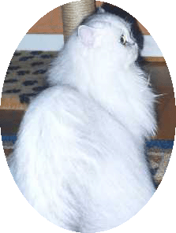
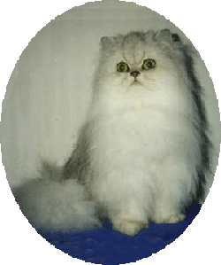
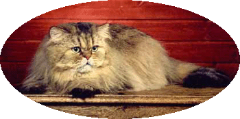

 |
CH
S* Mekalisto's Söta Silver Sessan Sessan är grunden till varför katteriet finns och hon är den som bestämmer och håller ordning på katterna här hemma. Sessan är oftast en mycket stillsam katt som ligger någonstans och vakar över de andra katterna, men kommer leksakerna fram är hon lika yster som en kattunge och far omkring som en snöboll på golvet. När det bjuds på godsaker som skinka eller mjukmat är hon snabbt på plats och gör sig hörd att hon vll smaka. Något som Sessan verkligen tar på allvar är sin mammaroll, och bättre mamma än henne får man leta efter. Sessan blir nog inte mamma igen av naturliga skäl, men då hon inte är kastrerad stannar hon på sidan för avelshonor. |
||||
UTSTÄLLNINGAR Örebro 20/1-01 CAC |
|||||
 |
|||||
Sessans
föräldrar |
|||||
 CH Yamacatos Reaching Rainbows PER ns 11 |
|||||
 GIC Yamacatos Golden Unlimited PER ny 11 |
|||||